Shirosato, Ibaraki: things to do, food and stays
Shirosato · Ibaraki
Shirosato
Highlighted on the Ibaraki map.
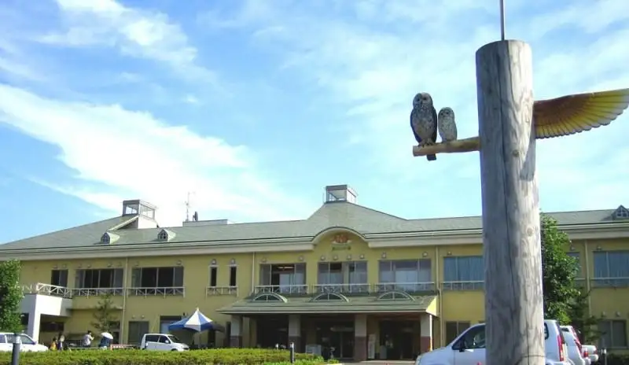
Stay
旅館あやめ
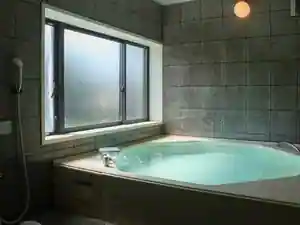
Ryokan Ayame
Ryokan inn in Ishizuka, Shirosato with business travelers.
ホテルキャッスルヴィレッジゴルフ＆リゾート
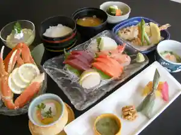
Hotel Kyassuruvirejjigorufu & Resort
Dining
焼肉 美炙樂
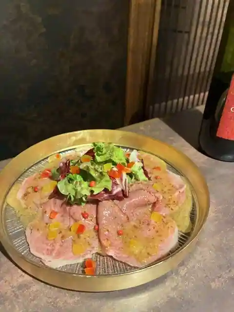
Yakiniku Bi Sha Raku
山桜
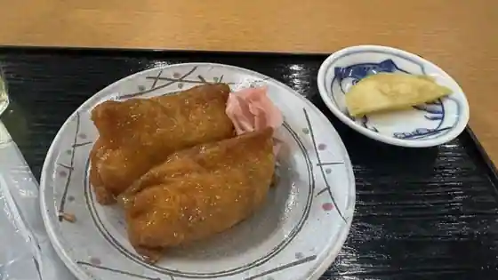
Yamazakura
そばきり空蔵
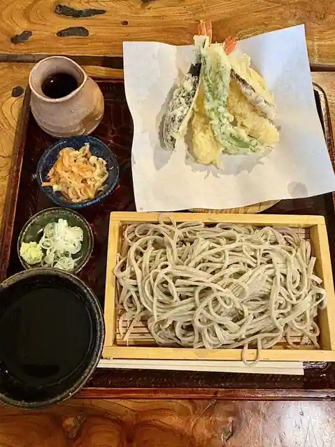
Sobakiri Sora Kura
おいしいお酒とぽかぽかご飯 ふたば食堂
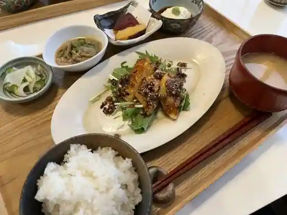
Oishio Sake Topokapokago Meshi Futaba Shokudo
MERCY's Coffee（マーシーズコーヒー）
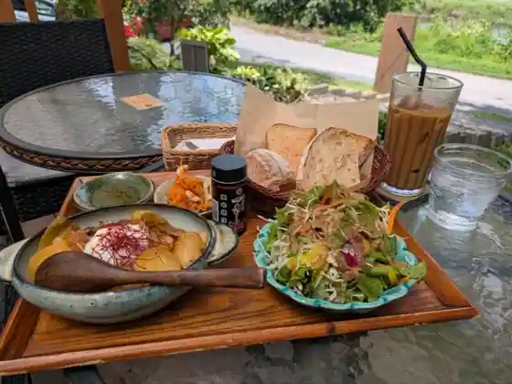
MERCY's Coffee(Mashizu Coffee)
ウィンザーパークゴルフ&カントリークラブ
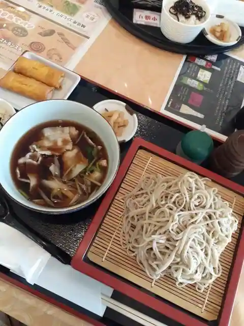
Uinza Park Gorufu & Kantorikurabu
お食事処ホロル
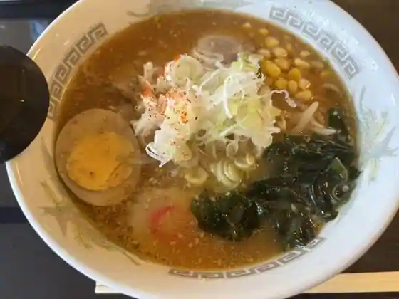
O Shokuji Tokoro Hororu
そば処 なかむら
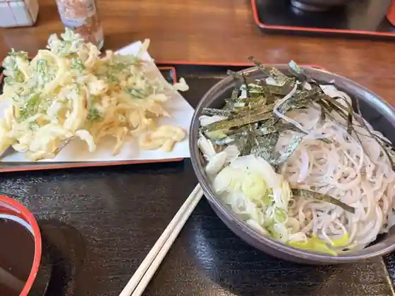
Soba Tokoro Nakamura
一三庵
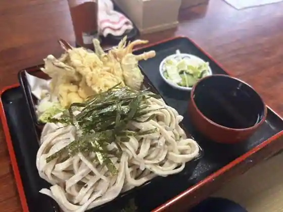
Kazumi Iori
ご飯屋さん寧々
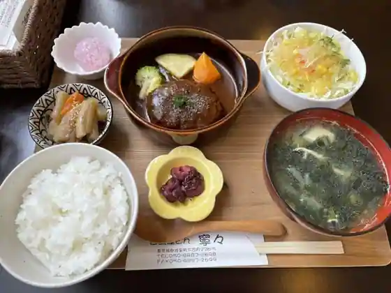
Go Meshiya San Nei (Kurikaesi)
ゆるり
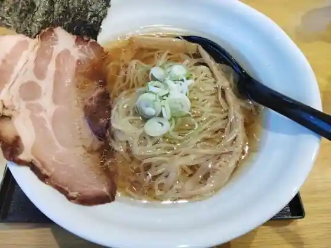
Yururi
城里ゴルフ倶楽部 レストラン
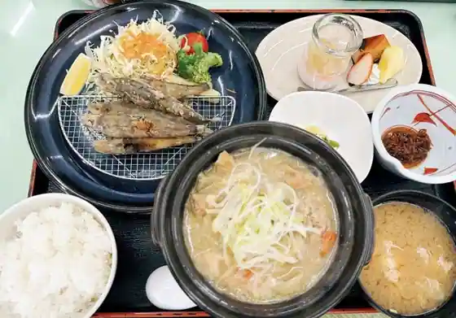
Shirosato Gorufu Kurabu Restaurant
笠間桜カントリー倶楽部 レストラン
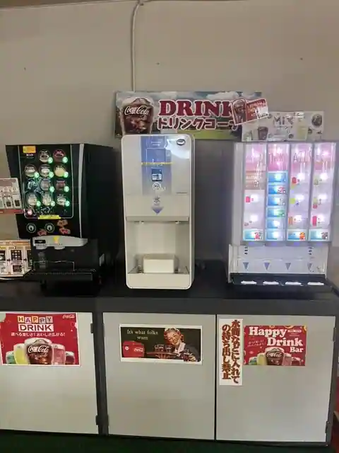
Kasama Sakura Kantori Kurabu Restaurant
うぐいすの森ゴルフクラブ水戸
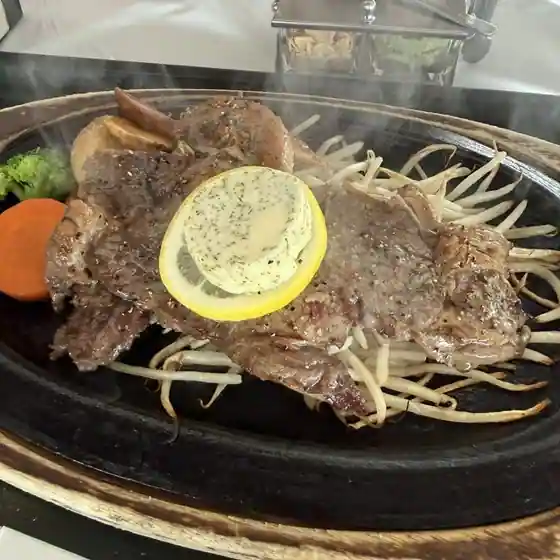
Uguisuno Mori Gorufukurabu Mito
桂ヶ丘カントリークラブ レストラン
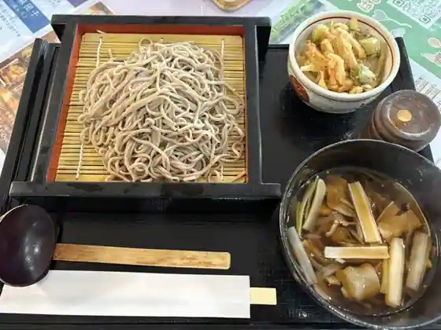
Katsura Ke Oka Kantorikurabu Restaurant
まるい食堂
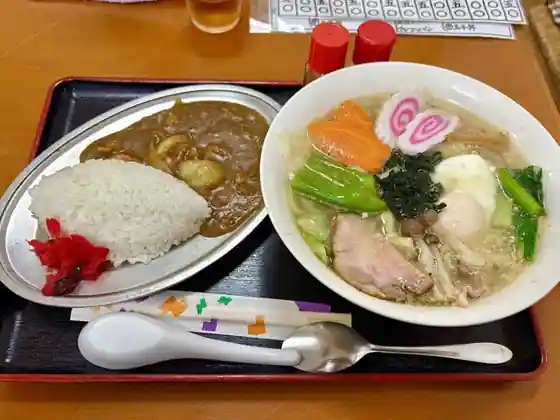
Marui Shokudo
串政
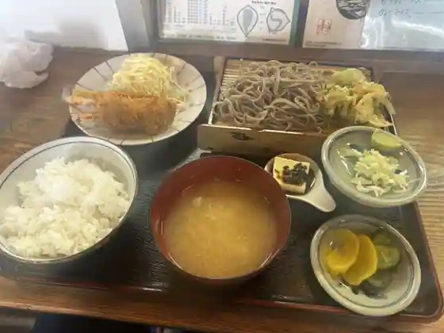
Kushi Matsurigoto
はぴはぴクレープ
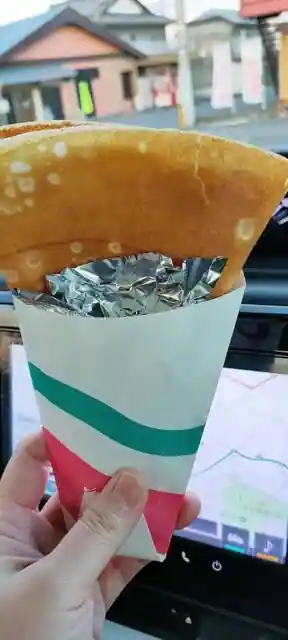
Hapihapi Kurepu
笑カフェ
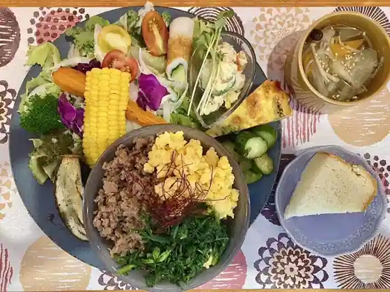
Warai Cafe
あやめ
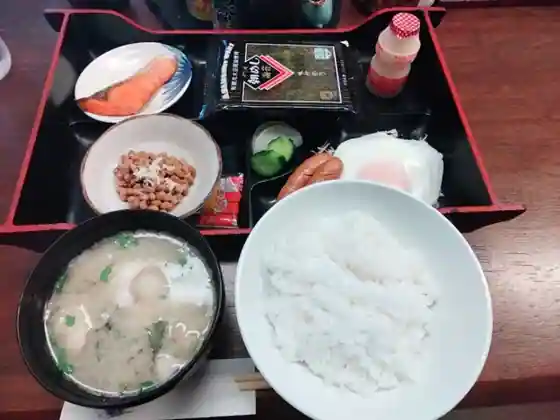
Ayame
居食屋かぶき
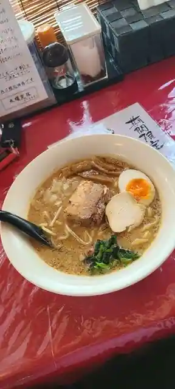
Kyo Shoku Ya Kabuki
やきとり なかの家
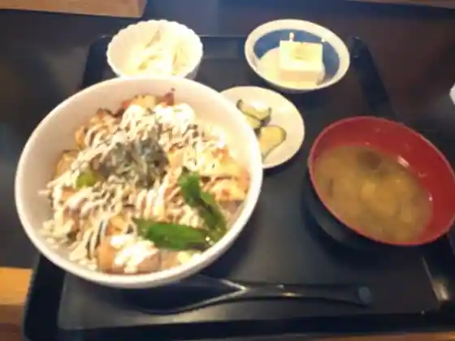
Yakitori Nakano Ie
Sights
Gozenyama Prefectural Nature Park
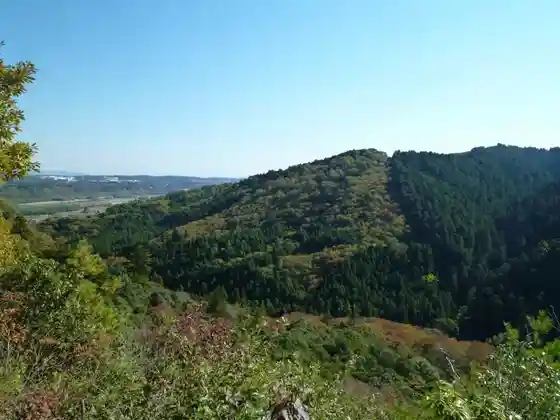
Shirosato Kenko Zoshin Shisetsu Hororu Baths
Guriin Katsura Uguisu Village
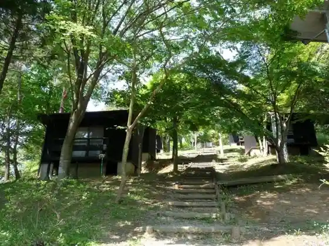
Shirosato Kazokuryoko Village Fureai Village
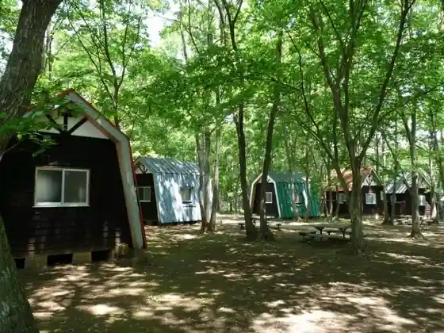
Sudajii
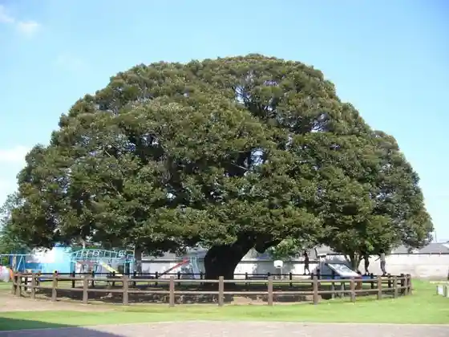
Roadside Station Katsura
Isono Buruberii Sono
Miyamoto Kanko Orchard
Soyo Kaze no Oka Shirosato Buruberii Garden
Ton (Toku) Ka Hara Burial Mound (Tokkeharakofun)
Katsuragaoka Kantorii Club
Shirosato Sogo Yagaikatsudo Center
Nakagawa
Mito Reikusukantorii Club
Nanakai Town Tami Center Atsumare
JA Mito Katsura Nosan Kako Tokoro
Soba Tokoro Kushi Matsurigoto
Komatsu Budo Sono
Sushi Tenpura Kokonoe
Foresutopia Shichiri Forest